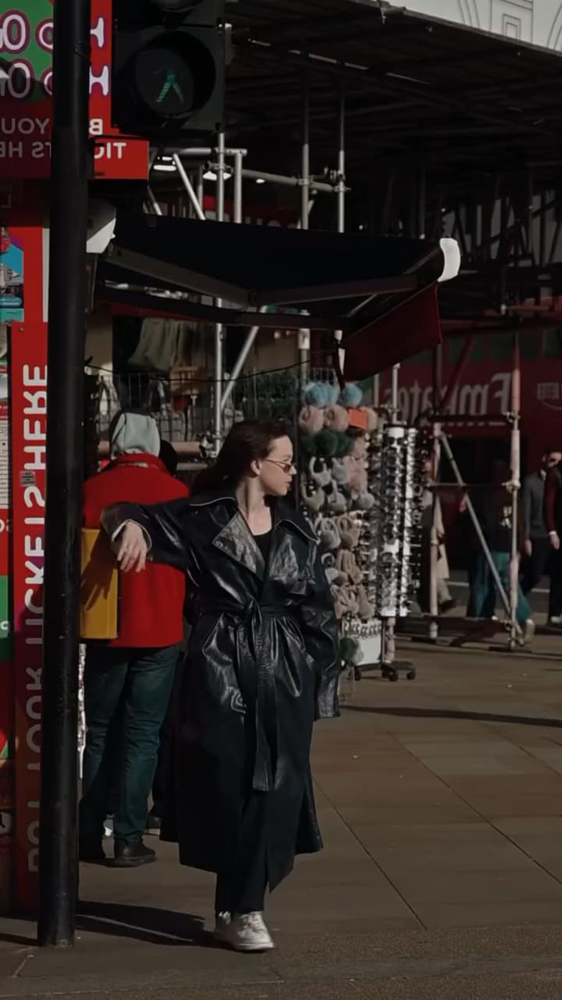
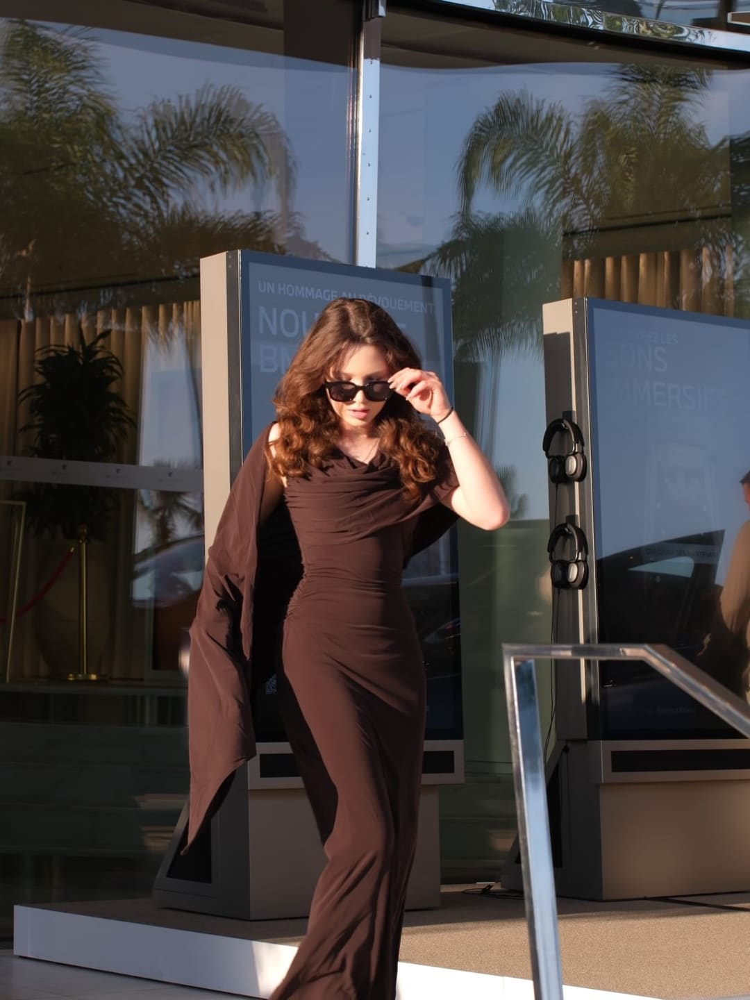
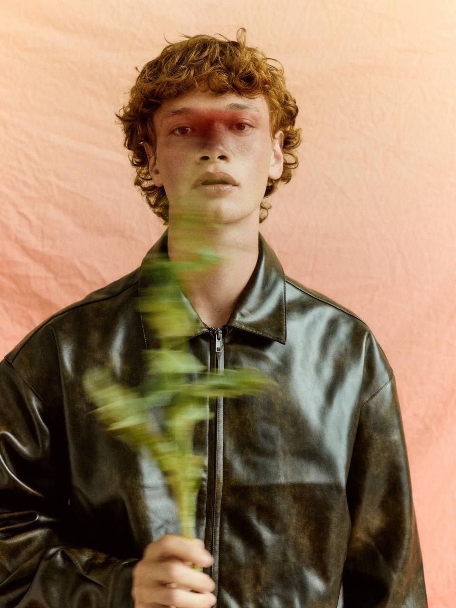
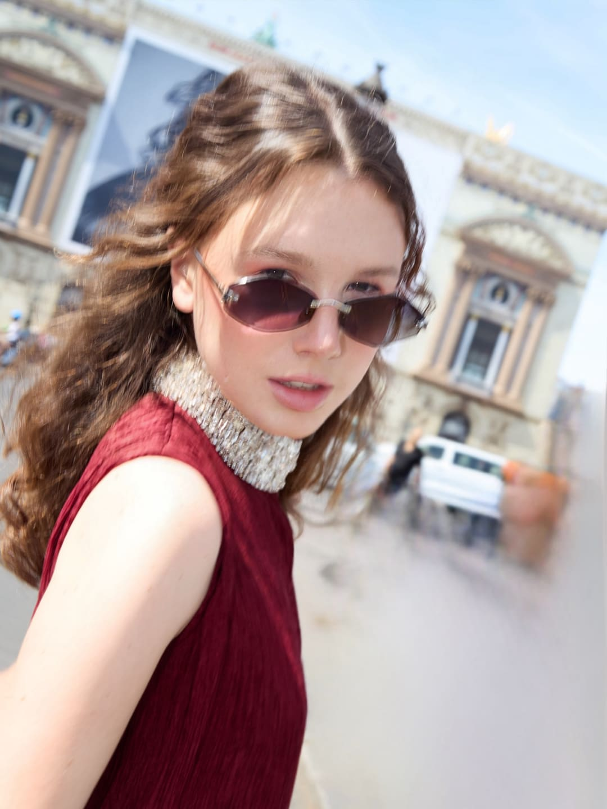
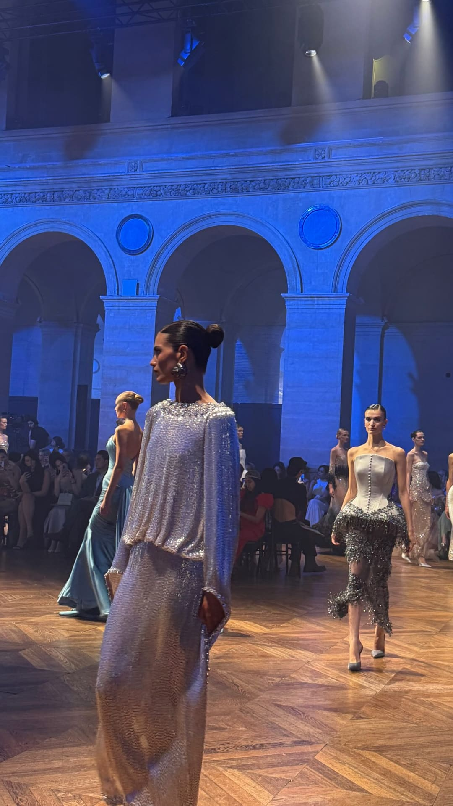
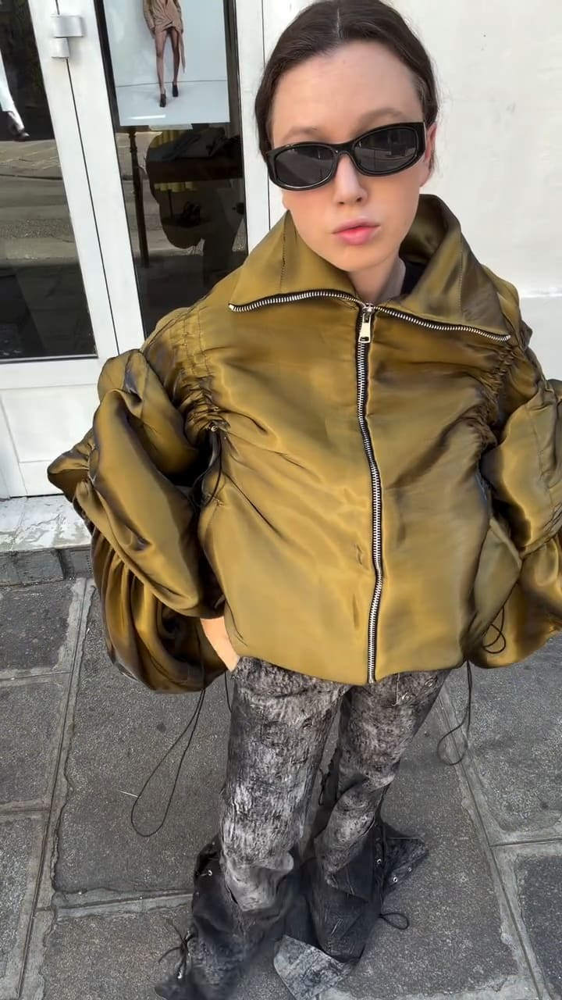

Icon Media Agency, a UK fashion production and talent management agency founded by Mary Pignatelli

Mary Pignatelli, founder
Fashion production, talent management, runway and events, and social media. Based in the UK.
Mary Pignatelli

A reminder that every great campaign is built by a team.
Icon Media Agency, on Instagram
Mary Pignatelli is the founder of Icon Media Agency, a fashion production and talent management agency based in the UK. It brings photoshoots, runway shows, brand events and social media together under her name.
Her 2026 so far: Georges Hobeika's couture show during Haute Couture Week in Paris, Cannes, and an interview with the German broadcaster ZDF.
What we do

Photoshoots, campaigns and content for fashion, beauty and jewellery brands, run from the first idea to the final edit.
- Fashion photoshoot production
- Editorial and campaign shoots
- Commercials and adverts
- Behind-the-scenes content

Representing models, creatives and personal brands, and getting them booked.
- Model management and creative representation
- Influencer and talent management
- Bookings

Fashion event production from start to finish: runway shows and brand events, with casting, styling, production and the night itself.
- Runway show production
- Fashion show casting
- Brand event management and sponsor partnerships

Content and account management for fashion brands, made for Instagram, where your audience already is.
- Social media content for fashion brands
- Reels and user-generated content
- Account management
Work
In motion
Reels from Mary's Instagram, from Piccadilly Circus to getting dressed for the day.
Piccadilly CircusLondon, in a black leather trench
In the frame
Houses and brands from Mary's and the agency's Instagram.
- Georges HobeikaCouture show, Haute Couture Week, Paris, 2026
- Haute Couture WeekParis, 2026
- The KooplesCannes, 2026
- Capture OneSoft Armour editorial, 2026
- Eidiko Concept StoreGetting dressed, from Mary's reel
- ZDFInterview, 2026
Tell Mary about your show, your shoot or your talent.
Thank you.